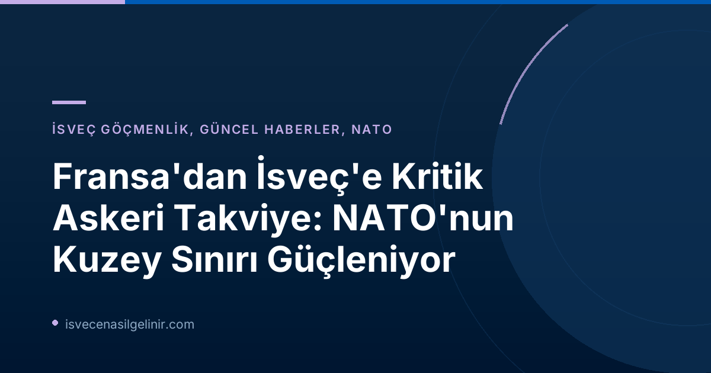

Fransa'dan İsveç'e Askeri Destek: Tarihi Bir Adım
Fransa'nın İsveç'e askeri bir birlik konuşlandırma kararı, NATO'nun doğu ve kuzey kanatlarında artan güvenlik endişelerine karşılık olarak atılmış önemli bir adım olarak değerlendiriliyor. SVT Nyheter'in edindiği bilgilere göre, Fransa Silahlı Kuvvetleri, İsveç liderliğindeki "FLF Finland" adlı ön cephe üssüne yüzlerce askerle katılacak. Bu askerlerin ana üslenme noktası İsveç'in kuzeyindeki stratejik öneme sahip Boden şehri olacak. Yaklaşık 200 kişilik birliğin rotasyonel esasa göre görev yapması planlanıyor.
Ankara'daki NATO Zirvesi ve Bölgesel Savunma Stratejileri
Bu önemli gelişme, Fransa Cumhurbaşkanı Emmanuel Macron ile İsveç Başbakanı Ulf Kristersson arasında bugün Ankara'da gerçekleşen NATO zirvesi kapsamındaki ikili görüşmelerde somutlaştı. Görüşmelerin ana gündem maddesi, NATO'nun kuzey sınırının savunmasıydı. Daha önce Fransa, FLF Finland'a katkı sunma niyetini beyan etmişti; bugünkü toplantılarla bu niyetler operasyonel planlara dönüştürüldü. Bu karar, bölgedeki askeri işbirliğinin ve karşılıklı güvenliğin artırılmasına yönelik güçlü bir taahhüdü temsil ediyor.
FLF Finland Nedir ve Boden'in Stratejik Önemi
"FLF Finland" (Forward Land Forces Finland), NATO'nun kuzeydoğu Avrupa'daki varlığını ve caydırıcılığını güçlendirmeyi amaçlayan, İsveç liderliğindeki çok uluslu bir ön cephe askeri yapısıdır. Bu üssün temel amacı, özellikle Arktik ve Baltık bölgelerindeki potansiyel tehditlere karşı NATO müttefiklerinin hızlı ve etkin bir şekilde yanıt verebilmesini sağlamaktır.
Boden, İsveç'in kuzeyinde yer alan ve uzun yıllardır İsveç Silahlı Kuvvetleri için hayati bir stratejik konumda bulunan bir şehirdir. Coğrafi konumu itibarıyla Arktik bölgesine yakınlığı, geniş tatbikat alanlarına sahip olması ve sağlam altyapısı sayesinde askeri operasyonlar ve eğitimler için ideal bir merkez teşkil etmektedir. Fransız birliğinin burada üslenmesi, bu coğrafyadaki askerî kapasiteyi önemli ölçüde artıracaktır. Askerlerin rotasyonel olarak görev yapması ise sürekli bir varlık ve eğitim kapasitesini güvence altına alırken, birimlerin esnekliğini de koruyacaktır.
Önemli Bilgiler: Fransa'nın İsveç'e Asker Konuşlandırması
| Kategori | Detay |
|---|---|
| Duyuru Kaynağı | SVT Nyheter Inrikes |
| Yayınlanma Tarihi | 8 Temmuz 2026, 12:56 (TSİ) |
| Güncelleme Tarihi | 8 Temmuz 2026, 13:07 (TSİ) |
| Konuşlandırılacak Asker Sayısı | Yaklaşık 200 (Kompanı büyüklüğünde) |
| Ana Üslenme Noktası | Boden, İsveç |
| Görev Tanımı | FLF Finland'da rotasyonel olarak görev yapma |
| Kararın Alındığı Toplantı | Ankara'daki NATO Zirvesi (Macron ve Kristersson ikili görüşmesi) |
İsveç'in NATO Üyeliği ve Bölgesel Güvenlik İçin Önemi
İsveç'in yakın zamanda NATO'ya katılımının ardından, bu tür çok uluslu savunma işbirlikleri ülkenin bölgesel güvenlikteki rolünü daha da pekiştiriyor. Finlandiya ile birlikte NATO'nun en yeni üyelerinden olan İsveç, ittifakın kuzey kanadını güçlendirme ve Arktik bölgesindeki stratejik konumunu kullanma konusunda kilit bir oyuncu haline geldi. Fransa'nın asker konuşlandırma kararı, NATO'nun kolektif savunma prensibinin somut bir göstergesi olup, potansiyel tehditlere karşı caydırıcılığı artıracaktır. İsveç'te uzun vadeli bir gelecek kurmayı düşünen bireyler için, ülkenin bu güvenlik çabaları ve değişen jeopolitik konumu, yaşam ve kariyer planlamasında göz önünde bulundurulması gereken önemli faktörlerdir. İsveç'e göçmenlik ve İsveç vatandaşlık sınavı hakkında güncel bilgilere ulaşmak için sitemizi ziyaret edebilirsiniz.
Gelecekteki Ortaklıklar ve Savunma İşbirlikleri
Bu konuşlandırma, Fransa ve İsveç arasındaki savunma işbirliğinin derinleşmesinin yanı sıra, geniş NATO çerçevesinde daha fazla entegrasyonun da bir başlangıcı olabilir. Gelecekte, benzeri çok uluslu girişimlerle ittifakın farklı bölgelerdeki kapasitelerinin artırılması beklenmektedir. İsveç'in ev sahipliği yaptığı bu tür üsler ve askeri varlıklar, NATO'nun hızla değişen güvenlik ortamına adaptasyon yeteneğini de ortaya koymaktadır.
Referanslar:
İsveç'te Güvenli Geleceğinizin Anahtarı!
İsveç'in dinamik ve güvenli ortamında yaşamak, çalışmak veya vatandaşlık almak mı istiyorsunuz? Göçmenlik süreçleri, oturma izinleri ve İsveç Vatandaşlık Testi hakkında en güncel ve kapsamlı bilgilere ulaşmak için doğru yerdesiniz. Uzman ekibimizle hayallerinizi gerçeğe dönüştürmek için ilk adımı atın!